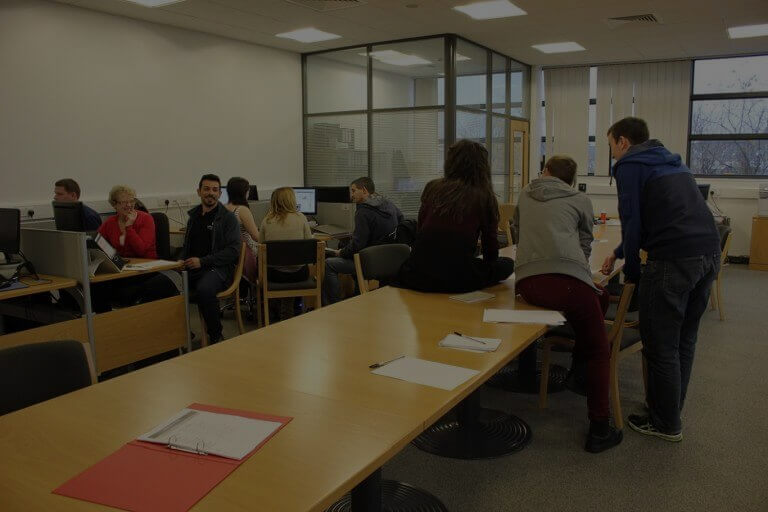
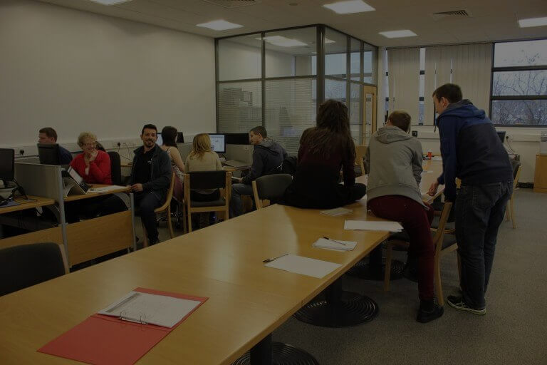

Course
Hi. If you here, that means you looking for some information about Front End Web Developer course in Finglas Training Centre. I will assist you and explain all what you need to know about course from first hand. Firstly course duration 36 weeks and plus 12 weeks work experience. This day course only for unemployed people. Apply through website, call or walk in to the college. Wait for interview. Waiting time depends of amount of students applying and could vary from few weeks up to few month. Then you will be invited for first screening. Screening was designed to check your general computers skills, like create file, copy - paste, save files, print from MS Word. Nothing special. However, most important part is how you follow the instructions. Then you wait for result. Result takes shorter period between few days to few weeks. If successful, will be notified and wait for final interview. Final interview will takes about 30 min and you will be asked general questions like why, how, when and exc. Average class has 8 to 15 students. Day starts from 9 am. At 10:00 teatime for 30 minutes. Next break at 12:45 for 45 min. And 15:45 end of the day. Learning process starting from manual handling that takes 1 full day. Each day class was consist of theory and rest of the day practice of what you learn that day.
HTML

HTML is first thing you learn. Without HTML impossible to learn other disciplines. This is base of webpage. On top of marked up code you can apply all other styling and scripts. You will start from basic page creation on simple Windows notepad. Basic elements like <p>, <H1> to <H6>, <a> will be your friends for long time. Then you learn useful HTML character entities like © ® < > and so on. After each theory information, you will be given practice sheets to replicate example or follow instruction to create some other constructions. You will be supplied with theory and practice sheets each time you learn some material. Regular assessment of finished material also have place. It is not hard, but you have to show that material you learn, you can apply in real world situation, and in correct way.
CSS
In few weeks, you will start to learn CSS3. Both disciplines will be thought same time. CSS assessments including group project. Class splitting for few groups and giving a choice of themes. Group should research this theme, fling text, photo or video material. Choice overall presence and look of website. Prepare all documents including font, colours, wireframes, SEO, accessibility and timetable of building website.
Java Script
JavaScript is the programming language of HTML and the Web. Main purpose of this language is to manipulate of HTML elements and properties. You can easily validate form without sending to server. Or update all headers on some events. You can assign to buttons some functions. You can change colour and size on hovering of same element or other. This language opening big opportunity to make page more dynamic, interactive and attractive for users. For Java Script created many extensions, libraries to extend functions and make coding easy. One of the library you will learn is JQuery. Almost identical syntax but more powerful result.
I hope I open your eyes to what actually behind the science happening on this great course. You will not be regret to spend some time of your life learning web development.